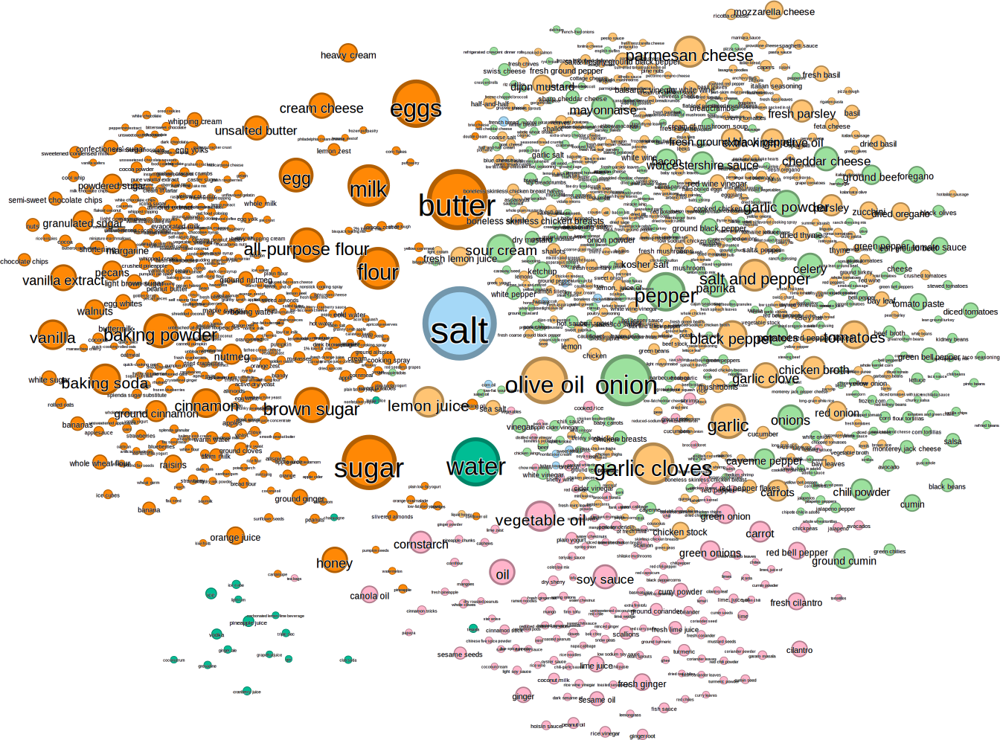
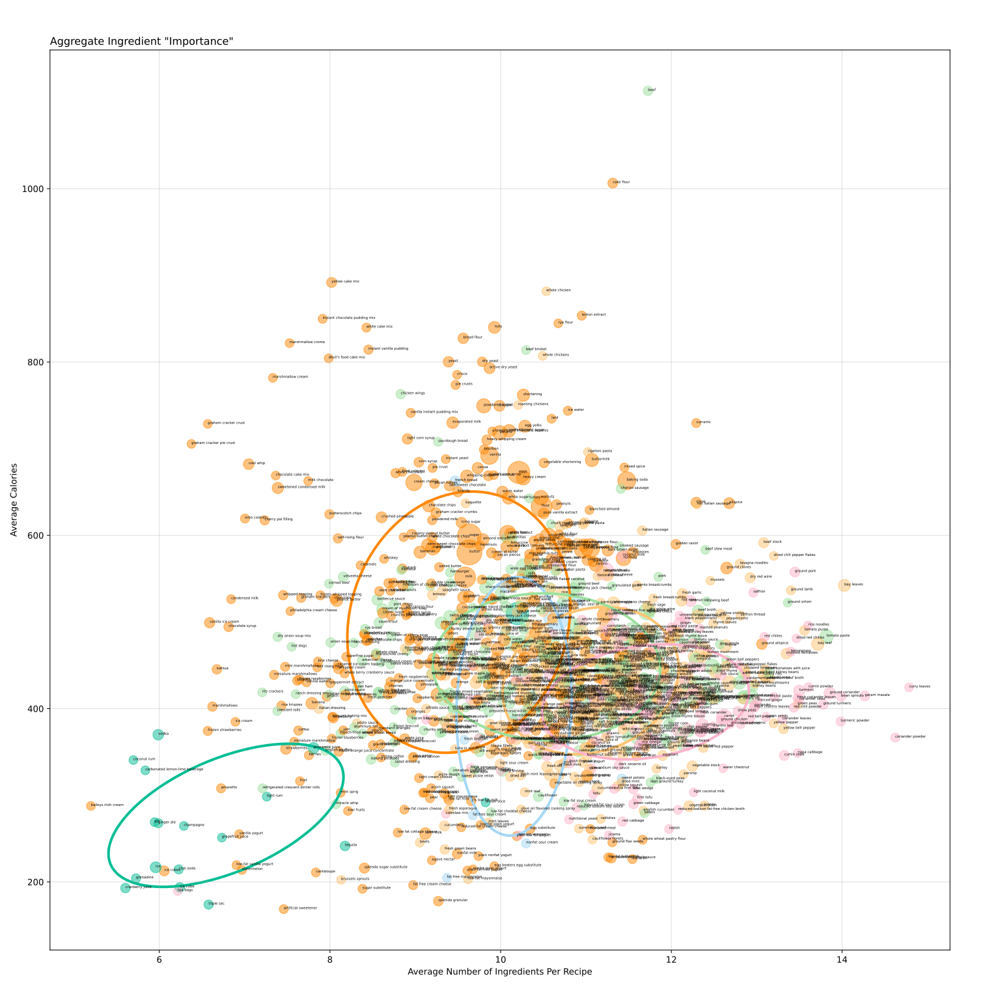
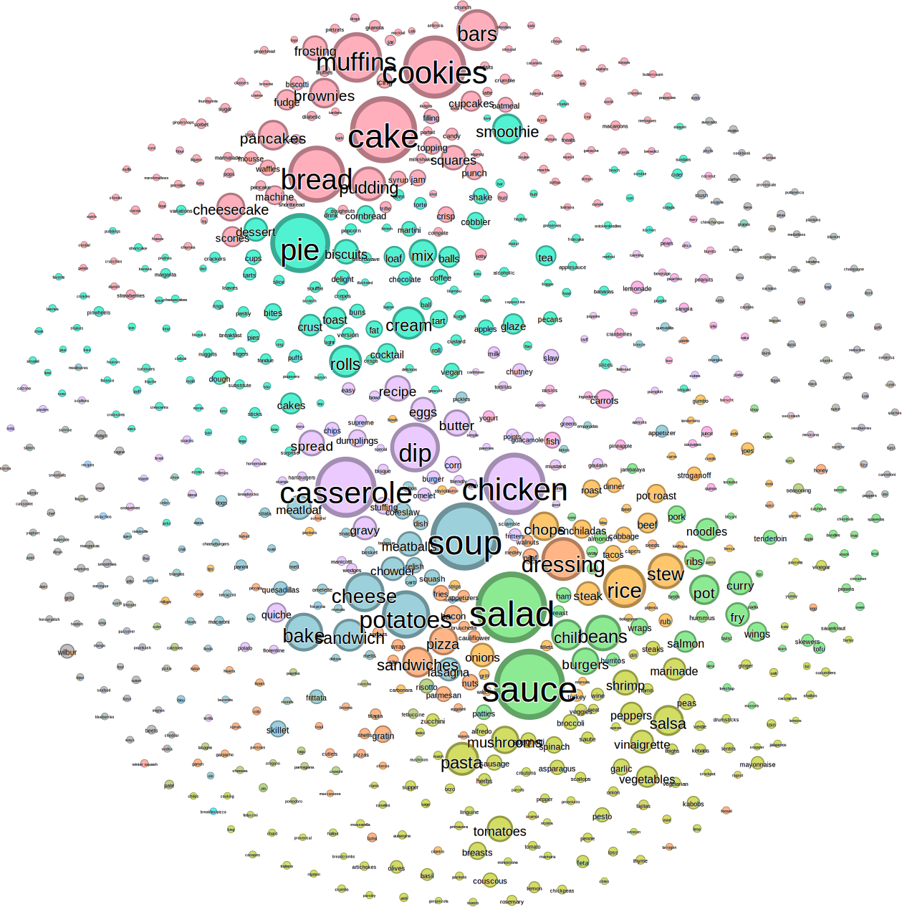
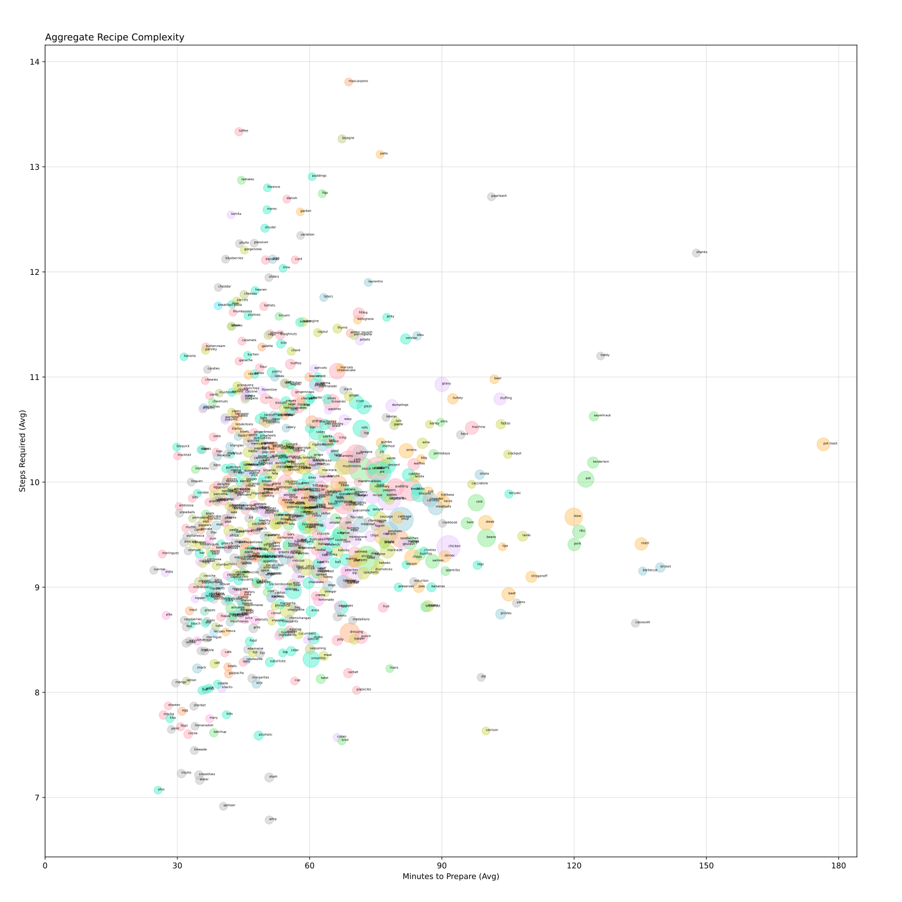

Cooking Network
Background
I am the primary chef of my household, and I enjoy trying new recipes. Completely independently, I would also like to broaden my understanding of machine learning and language models by implementing more practical examples. I figured I might be able to combine my understanding and interest in cooking with this desire to build a language model if I could find a good dataset of recipes. Searching through publicly available datasets, I was able to find a possible contender. Before jumping in to training, I wanted to better understand the data -- how it is structured, how it could be used, and what might be possible. That exploration is shared below.
The data for this investigation comes from a Kaggle dataset of Food.com recipes. With over 230,000 recipes accumulated over 18 years, the dataset was initially used for a large language model (LLM) generating preference-based recipes. Therefore, in addition to recipe information like steps, ingredients, nutrition, description, and prep time, there are separate csv files containing user information pertaining to ratings, reviews, tags, and more. The following post will focus exclusively on the recipes and will ignore most of the human element of this dataset.
Note: The images in this post are quite large but contain a lot of information. Please zoom-in as needed to view the individual nodes and labels.
Ingredient Relationships
One method I wanted to use to find trends and relationships between thousands of ingredients is a force-directed network (FDN). A FDN is constructed by establishing nodes and edges between nodes. Not every node-to-node pair needs an edge. Nodes and edges often each have their own "weight" which establishes how significant the node size or relationship between nodes is relative to others in the network. The environment is given a set of physical rules with force equations and a simulation is started which incrementally moves the nodes to a location that minimizes the energy of the system. To understand this in greater detail, two different algorithms from Gephi will be used to simulate the FDNs. Gephi is a standalone free software package that enables live network graphing and analysis. This is a deviation from my usual python coding, although all data formatting, filtering, scatter-plotting, and parsing was still performed through python - this includes setting edge and node weights. Some open-source python options for plotting FDNs are NetworkX and iGraph. Neither are as intuitive or as adaptive as Gephi.
Standard FDN algorithms usually incorporate two or three forces:
The first algorithm we will look at is Force Atlas 2 - a specialized Gephi algorithm designed for social network analysis. This algorithm uses an optional global gravity as well a linear connection force based on the distance between the two nodes. The crux of the algorithm depends on tuning the repulsion force to be degree-dependent. Degree is effectively how well-connected a node is. Thus, a poorly-connected node is preferentially drawn to highly-connected nodes. Effectively the highly-connected node is a "hub" that less connected nodes branch from like a tree-leaf model.
To generate the data, all ~230,000 recipes' ingredient lists were scanned. Any ingredient occurrence was counted across the entire recipe list, and every ingredient-to-ingredient pair detected was also tallied. Once all recipes were checked, the edges were set to a weighting relationship from 0-1 by dividing the number of pairs over the tally of the less-frequently occurring ingredient. As an example, if coriander appears in 12 recipes and turmeric appears in 15, and they both occur in 8 recipes, then their edge connection is 8/12 = 0.67. Originally, this yielded 14,592 nodes (different ingredients) with 1,502,824 edges. While interesting, this amount of data is a burden to work with even in specialized software. Therefore, to better examine trends and relationships without overcrowding, the nodes were filtered to ingredients occurring at least 200 times and edge strength of at least 0.05 (at least 5% ingredient overlap). This limited the data of interest to only 1,149 nodes and 34,620 edges.
The nodes in the map above are sized based on their relative frequency - larger nodes are more common in recipes than smaller nodes. Likewise, the nodes are colored based on their modularity class. Modularity is a way of measuring the strength of division of modules or communities in a network. If a network consisted of three fully independent communities without any shared edges, it would have high modularity and the three communities would likely be identified depending on the starting parameters. Modularity is not statistically significant or consistent but is a helpful way to generally delineate different communities in a network.
The most striking part of the network is how central and important salt is as an ingredient. Salt is included in nearly 86,000 of the 232,000 recipes. It serves as the bridge between baking and the other communities and is almost recognized as its own independent entity. The other staple ingredients are butter (54k), garlic (split into three names - sum to 54k), onion(s) (49k), and sugar (45k).
There were six modularity classes found. They are loosely interpreted as: baking (orange), beverages (sage), Asian/sauces (pink), savory/Mediterranean (yellow), American/Hispanic (green), Salt & stragglers (blue). Within each identified community there are subclusters that can be recognized by similarity but not algorithmically. For instance, in the top right, there is an Italian cluster that consists of mozzarella, ricotta, penne pasta, parmesan, etc. Baking is segregated into "pure baking" and "staples" wherein staples include ingredients like milk, eggs, butter, and sugar whereas pure baking goods are ingredients on the far left which include vanilla, baking powder, and confectioners' sugar. Feel free to scroll around the network to see if any other clusters stand out.
Let's now take these ingredients and their modularity communities and plot them on a very rudimentary scale of "importance". The following scatterplot displays the average number of ingredients (x-axis) and the average calories (y-axis) of recipes made using these ingredients. Ingredients farther to the right are generally only added to complex recipes and ingredients higher on the plot are more caloric. Therefore, an ingredient in the upper left would be an ingredient staple - being calorically rich and serving as a more standalone ingredient. Conversely, ingredients in the lower right could be luxuries or taste enhancers - only added to recipes with many other ingredients without adding many calories. Point size and color is the same as the network above. Partial bounding ellipses are drawn to highlight the communities.
The graph structure forms a loose triangle where ingredients in the lower left are in simpler recipes and generally don't have many calories. This section is dominated by the beverages category. Farther right, but still low in calories, we can see several artificial sweeteners and low-fat alternatives. These are likely included in "healthy" or low-calorie recipes. Far to the right, we see ingredients which are almost exclusively used in complex recipes. Some that stand out are turmeric, garam masala, coriander, and curry leaves. This section is dominated by Indian and other spices. Some other standouts are bean sprouts and bay leaves - each of which are traditionally additives to complicated recipes like phở or chili and stews. The caloric monster is beef, a massive outlier at about 1100 calories per serving! Drawing a line from beef to the mid-point of the y-axis, we can see other high calorie but low-complexity ingredients. Some of these are various cake mixes, marshmallow cream, pie crusts, and puddings. These make intuitive sense as the mixes and crusts come pre-prepared to expedite baking while being rich in sugar and fat.
Recipe Keyword Similarity
I want to look beyond ingredient and find trends in overall food categories. To do this, I will analyze titles for network clustering. Unfortunately, most of the recipe have titles like "get the sensation brownies" or "healthy for them yogurt popsicles". With unique names like these, it would be hard to find any trends. Therefore some pre-processing was required to distill these titles into keywords like brownies and popsicles. The easiest way to do this for 232,000 recipes was to feed them through a LLM and ask for a keyword output. Therefore, you might notice a couple odd categories and names, but as a whole this method is way faster and easier than manually reading every title. After all, it would take almost 200 hours of continuous effort if I could read and parse 20 titles per minute which is highly unlikely.
Recipe keywords were tallied (only one per recipe), and edges were constructed based on a similarity metric comparing the top ten most frequent ingredients in each recipe type. For instance bread and cake have more similar top 10 most common ingredients than cake and burgers. Edge weight is set accordingly. Node size is based on the count of recipes with said keyword. For this network, I instead used the Fruchterman Reingold algorithm to minimize the energy of the model. In this model, the repulsion force is analogous to Coulomb's law, and the attractive force uses edge weight as a spring constant. Again, there is an overall system gravity which holds the network together.
The modularity classes and proximal recipes in this network are less intuitive than the ingredient network. I suspect some of that might be due to high similarity in key ingredients with many recipes. For instance, beans and burgers are next to each other in the figure. I would assume beans are the principal ingredient of beans, and ground beef is for burgers. However, instead, their top ten ingredients are:
These are the exact same lists only in slightly different orders. Can you tell which is beans and which is burgers? The 2nd one with sugar as a higher priority is beans. I think one of the complications is that the common ingredients are prone to show up in all ingredients, but the principal ingredient like the beans or the burger meat that defines the food can actually be substituted for a number of options. For instance, a burger could be a vegan burger or chicken burger or bison burger, and beans might be baked beans or pinto beans or refried beans. In this case, the salt and onion and oil and garlic are more persistent across recipes than the defining substance itself. If I were to revisit this, I would want to develop a new method for comparing keyword similarity besides most common ingredients.
Despite this limitation, some trends are still clearly observable. The segregation of baked goods from traditional dinner meals is quite apparent, likely due to flour, sugar, butter, egg versus salt, oil, garlic, etc. Small cluster communities like jambalaya and goulash or italian pockets of risotto, fettuccine, and carbonara are observable at closer inspection. I am unable to come up with a summary
descriptor for the 10 algorithmically determined communities in the network. If you think you are able, give it a shot.
Another interesting revelation from this network is based on the node sizes which again are based on the tally of recipes attributed to that keyword. Large node sizes indicate a large amount of shared recipes. We have an abundance of recipes for soups, salads, casseroles, sauces, and chicken, and bakers have created many variations of muffins, cookies, pie, bread, and cake.
Overall, there are nearly 9000 recipes for salads. Again, the keyword issue comes to mind because a chicken salad is a completely distinct entity from a beet, goat cheese, and arugula salad, yet they are included in the same category. Better language model keyword identification might be able to distinguish these. Alternatively, a language model could be trained off of the ingredient list (with or without the steps)
to determine the proper keyword instead of using the title alone. Unfortunately, this method would be partially flawed because a network model based on trained similarity of ingredient lists would report high modularity when measuring this same ingredient similarity. In simpler terms, it would be like using the training data set as the experimental set where the training is the LLM and the experiment is the network.
After extracting the modularity classes for each of these keywords, we can now plot them against other metrics. Interesting to me is recipe complexity or burden. A burdensome recipe takes a long time to prepare and has many steps. Fortunately, both of these pieces of information are saved in the dataset. The scatterplot below shows all 783 nodes or keywords with the average minutes to prepare on the x-axis and the average steps to prepare on the y-axis. Recipe keywords in the top right are more complex and burdensome than those in the bottom left. Size and color are the same as the network above, but no ellipses were drawn on this figure as there were 10 communities as well as many stragglers identified through modularity.

The keyword "complexity" scatterplot forms a relatively triangular shape with a centroid near 9.5 steps and 60 minutes of prep and cook time. This feels pretty standard for recipes that I make as well. My eyes are first drawn to the far right to "pot roast" which averages nearly 3 hours of cook time. Other time-intensive recipes are all pretty intuitive:
barbecue, brisket, cassoulet, shanks, ribs, pot & roast, stew, sauerkraut, and pork. The surprising recipe with a long cook time is the toddy. Most toddy recipes online have less than 1 hour prep times; however, three toddy recipes from this dataset have around 24 hour prep times - likely due to overnight resting or seeping.
High instruction step-count recipes are mascarpone, toffee, lasagna, paprikash, tamales, puddings, and pollo. Pollo is relatively unique considering chicken only averages 9.4 steps, nearly 4 fewer? Of these, I am most surprised about mascarpone although that is a fairly broad category of recipes.
Most of the low complexity (few steps & short time) keywords pertain to beverages. One that stands out is "kids". While an unexpected keyword to find, it makes sense that food prep for children needs to be quick and easy.
Thoughts & Remarks
FDNs are a fun way to find relationships and communities in complex data. They can be challenging to set up but are worth the effort. I found they require a significant amount of tuning to pull relevant information, and they are exceptionally susceptible to edge-weight thresholding criteria. Their general absence of local minima can make reproducing a figure nearly impossible although it keeps things interesting. The minimization of system energy and simulation requirement to build these networks is a very different way to plot relationships compared to other discrete and deliberate examples. Given some of my background in system modelling, I would like to explore other simulation-based data analysis techniques.
I do not think that any discoveries in this data were shocking, but it was exciting to see such a large field of cooking reduced to encompassing images. While maybe not practical, it might be fun to create one giant network mapping all fifteen-thousand or so ingredients together. One hindrance of this dataset is that the recipes are user submitted, so there are variations in ingredient names. One user might reference canned kidney beans while another references Goya kidney beans. A LLM could be able to better filter the ingredient input for this dataset similar to keyword extraction. If this could reduce the 15,000 ingredients to ~5000 or so, then a wholistic network might be interpretable.
There is still a lot of unexplored information in this dataset. For example, nutrition content is not limited to calories although I feel like sugar, fat, sodium, and protein are quite straight forward with respect to ingredient source. Instead, it might be worth exploring nutrition with respect to keyword. The home-page image for this post is a network of the tags associated with recipes, but no further analysis is performed. This endeavor could be worthwhile for those interested. Additionally, recipes have submission date, contributor ID, ratings, reviews, and descriptions which could provide valuable insight into trends over time or human preferences. The dataset's initial use was for LLM generation, and I would like to also explore that field by training a small recipe based language model.